Implementar un dominio en Active Directory
Comenzaremos con el primer tópico a realizar, ya teniendo nuestro Windows server 2016 arriba, haciendo uso de Vmware, accederemos al server manager, haremos click en ADD ROLES AND FEATURES*
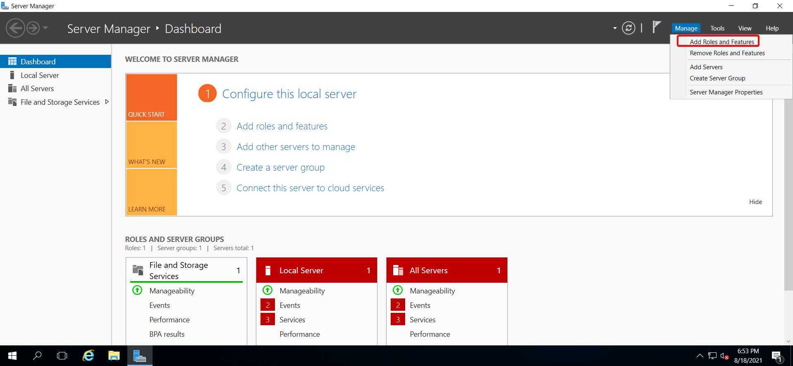
Ya abierto el wizard, daremos click en next 3 veces hasta llegar a la sección de SERVER SELECTION, esto lo haremos ya que las opciones que estamos volando la dejaremos por default. Estando en la seccion de Server Roles marcaremos el rol de ACTIVE DIRECTORY DOMAIN SERVICES.

Seleccionado el rol nos aparecerá otra ventana donde daremos click en ADD FEATURES.
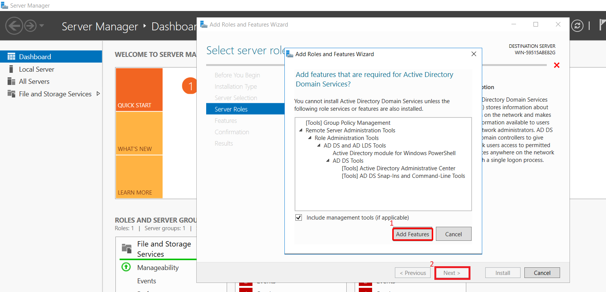
En la sección de FEATURES dejamos todo por default y damos click en next.
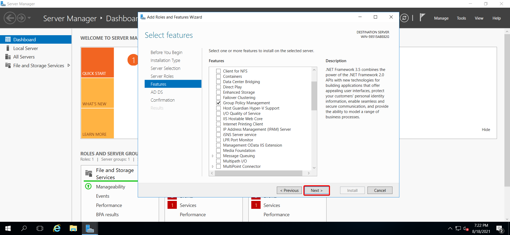
Ya estando en la sección de CONFIRMATION marcamos la casilla de RESTART para que reinicie el equipo en caso de que sea necesario, hecho esto hacemos click en INSTALL.
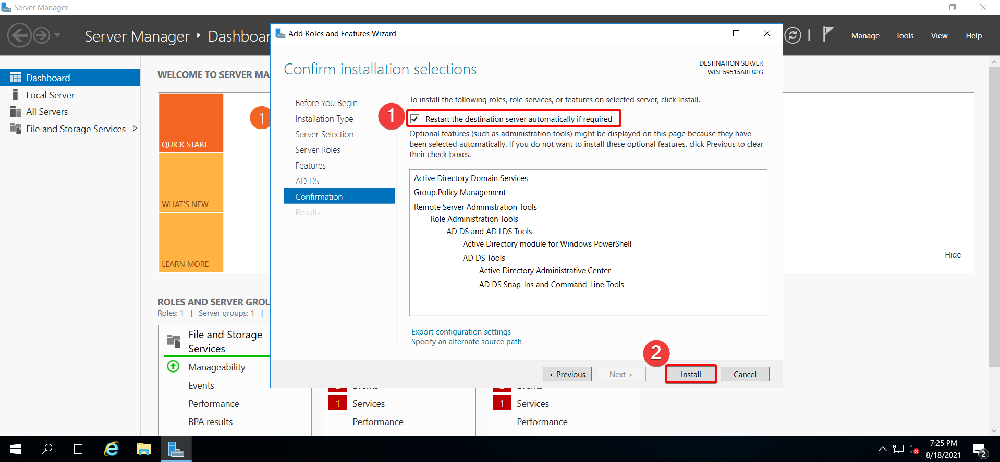
Ahora vamos a esperar que se complete la instalación.
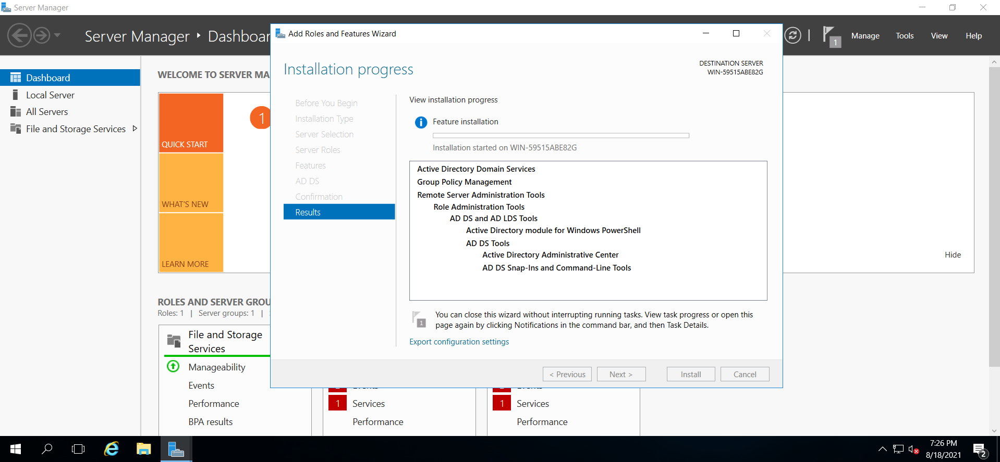
Terminada la instalación vamos a dar click en PROMOTE THIS SERVER TO A DOMAIN CONTROLLER
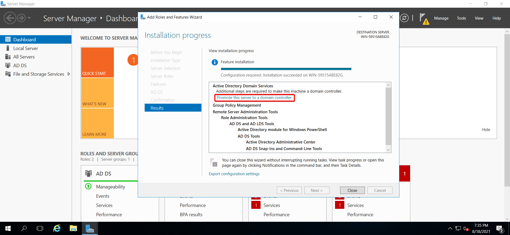
Hecho click en la opción anterior se nos abrirá una venta para promover nuestro servidor como controlador de dominio, como no tenemos ningún forest configurado seleccionaremos la opcion ADD A NEW FOREST, y en la seccion ROOT DOMAIN NAME escribiremos el nombre de dominio que queremos tener.
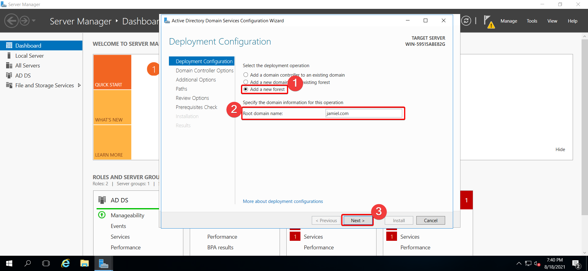
En el siguiente paso vamos a indicar la password para el modo de restauración.
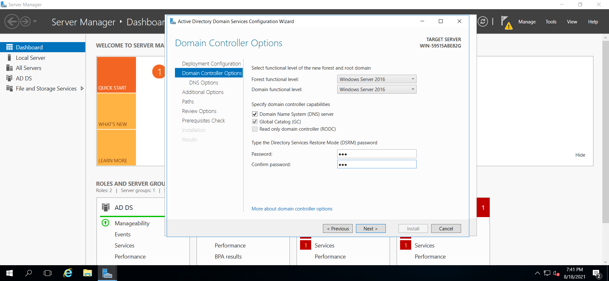
En la parte de DNS OPTIONS la dejaremos por default.
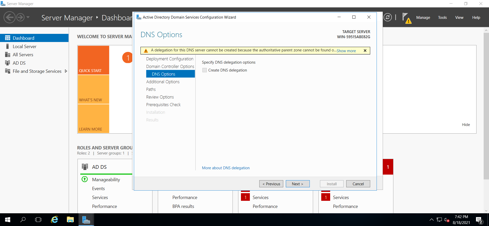
Ya en ADDITIONAL OPTIONS lo dejaremos por default igualmente y daremos click en next.
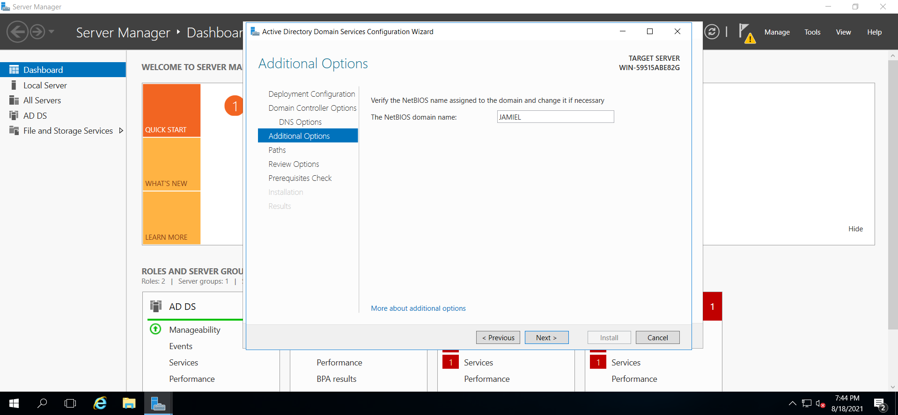
Las demás opciones la dejaremos por default, por lo tanto daremos click en next hasta llegar a la sección de Prerequisites check. Si tenemos todo bien podemos dar click en Install.
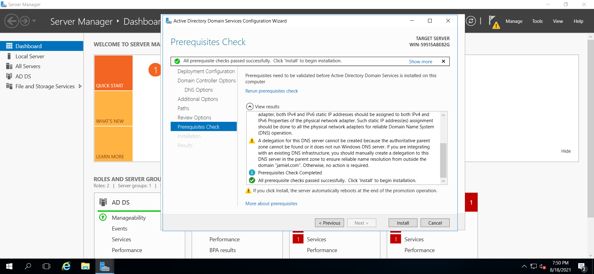
Terminada la intalación nuestro servidor procederá a reiniciarse por lo tanto esperamos a que se complete este proceso y veremos que nuestro AD se ha instalado correctamente.
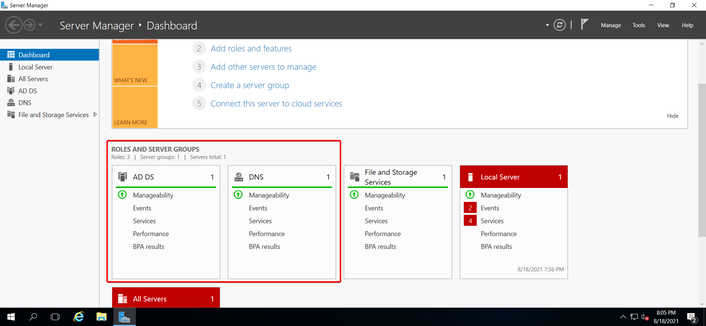